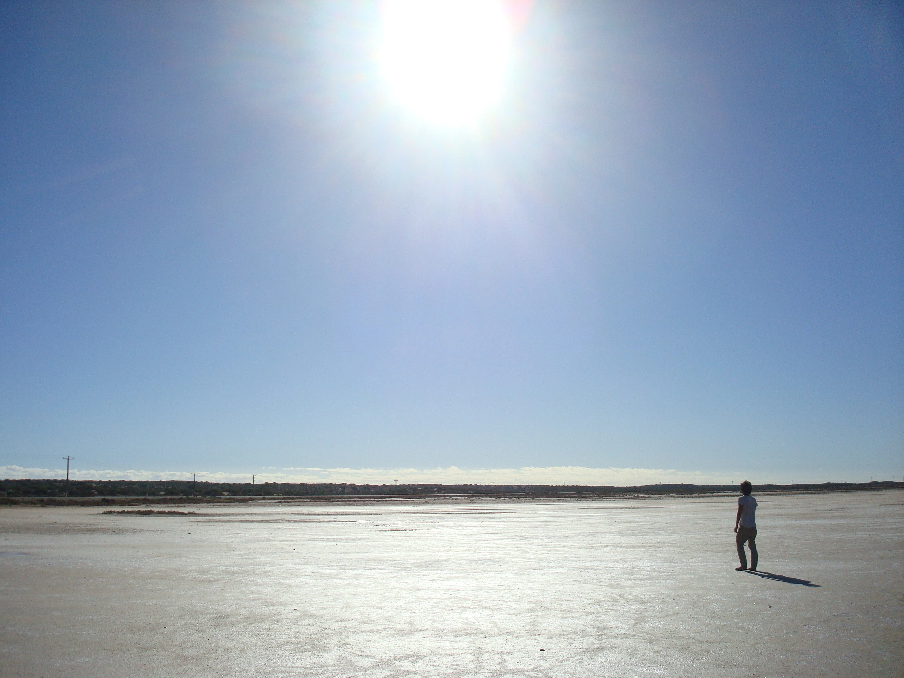

I quit Tasmania after having spent a month on the island, a time that I passed between Devonport where I found a short temporary job, picking vegetables in a farm and Hobart, where I was mostly confined in my accommodation except from taking short road trips around the beautiful ocean sides. Once I discarded the option to go travelling to New Zealand, mostly due to the upcoming winter season (it was May if I remember well), the most valid option left was to start a big road trip in the West coast which is what we did after having met again with the crew, first shortly in Melbourne and then in Perth where we finally bought a (our) super-cheap and super unreliable second hand car that despite of all was able to take us all the way from Perth to Darwin in the next three months.

It is during this trip that I saw what I associate with the most real Australia. Empty deserted lands of red sand, dried up salty lakes, pink lakes, all-year long sunny places, dolphins, emus and much more. We spent the first couple of weeks as nomads in a town south of Perth called Donnybrook, where we luckily found a month job in a pumpkin farm that helped us to pay back the car and to come up with a general plan for the rest of the trip. Starting from there, some of the places still left in my mind after 13 years from that trip are the Pinnacle desert, the Hutt Lagoon pink lake, the eternal sunset of Monkey Mia, the wild, rainy and inhabited area of Exmouth with its beautiful natural park till we finally reached the town of Broome, where we stopped for a while and enjoyed the quietness of this little beach town.

Nomadism is something that I always valued, firstly because as human race we were born nomads and secondly because it has the capacity to bring humans away to the boring, overconfident, partly shallow routinary sedentary life, where most of things are taken for granted and where the only thing that matter is to receive a check at the end of the month that could fulfill almost every need we have. One of my favourite writers called Bruce Chatwin also partly agrees with some of those opinions and in his book The Songlines gives a deep insight, digging into the life of native Aboriginal people in the Australian Northern territories and researching on how music was transmitted back in time, simply singing songs through the land, in a way that divides people between "similar" and "strangers" and creates a sort of invisible board between people of different tribes.

After the time I spent in Broome I was slowly getting used to the idea that my time down under was quickly running out and since the winter was approaching, I felt ready to move to the next adventure in south-east Asia. The last part of the trip involved driving from Broome to Darwin which an extra member that joined our crew from Broome onward. The space in the car was getting very limited and my physical condition quite poor since a strong back pain started to kick in and joined me for the rest of the trip. There were few days where I seriously struggled with it till the point that in order to have the capacity to fully stretch my back, I decided to spend the night on the roof of the car in order to try to find some sleep. The highlight of this last couple of weeks was certainly Kakadu National park where we got in contact with saltwater crocodiles for the first time ever and for the second time during a cave exploration, we definitely got too close to one we haven't noticed until the point he made us aware of the fact that we shouldn't proceed any further than that by wagging its tail in the water and scaring the shit out of us. Once we reached Darwin it was time for me to rest a bit before changing continent, culture, food and before starting my own dance, leaving the boys behind. The final outcome of living in Australia although only for less than one year, it is that backpacking is exhausting, especially when you have to work in order to pay for your trip but the places you come across, the feeling of freedom and the big amount of other roaming souls you come across while on the road, definitely pay back for all the fatigue you have to deal with, all the times you have to adapt to other people habits or to all the jobs you don't like to have to do. So for me the first final short answer that after the trip came up was simply "do it again!"